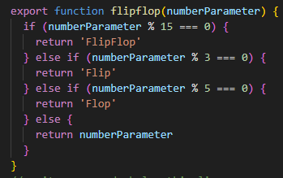

Problem Solving Reflection
A time I was blocked on a simple problem
Problem: I was trying to understand how to write a function that takes a number as a parameter and returns different strings based on whether the number is divisible by 3, 5, or 15. The code looked something like this.
Techniques used: At first, I googled the code to try and understand how it works. I didn’t fully understand it initially, so I used AI assistance to help me break down the logic. It helped me understand that the % operator checks and how the function returns different strings based on that. Still, I feel I need more time and practice to fully understand it
Feelings: I felt confused and a bit overwhelmed at first. When I used AI to help, I felt a little more confident, but I know I need to spend more time practicing these concepts. It was a reminder that learning programming takes patience and persistence.
Lesson learned: I learned that it’s okay to seek help, whether from Google or AI tools. Also, I realized that understanding the logic behind functions takes time, and breaking down complex code into smaller parts helps me learn better.
Confidence in problem-solving techniques
I feel most confident using console.log to debug and googling for solutions. Pseudocode is helpful but sometimes I skip it, which makes solving harder
Reluctance to ask for help
Sometimes I hesitate to ask because I feel I should figure it out on my own. Next time, I will remind myself that asking is okay and can save time.
← Back to Home